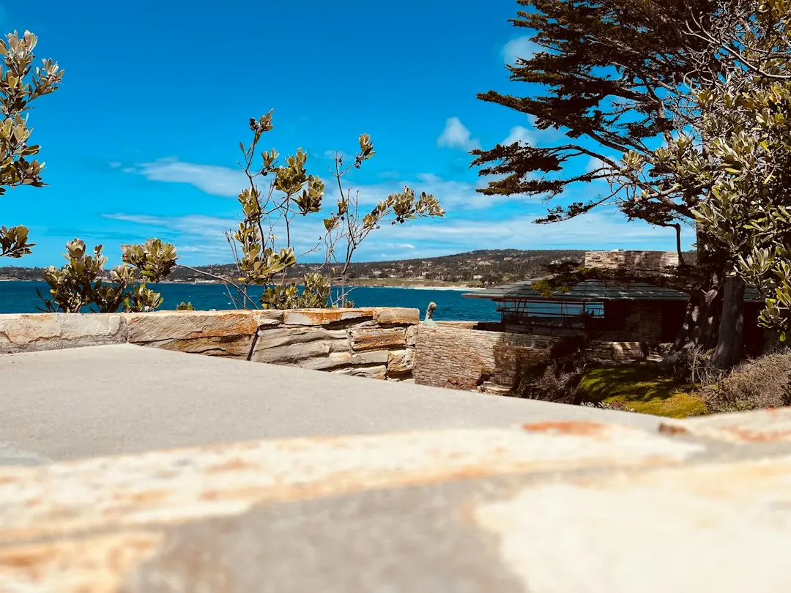

For homeowners comparing retaining walls sunshine coast options, the practical decision is material fit, ground behaviour, drainage, approvals and what the wall is expected to hold.
Retaining Walls Sunshine Coast Explained
Retaining Wall Sunshine Coast sets a useful order for scoping: height, what sits above the wall, ground and drainage first, then material choice. A matching finish can hide very different structures behind the face.
A low garden terrace, a boundary replacement, a tall rendered block wall and a sloping acreage wall should not be quoted as one generic job. Measure height and length, describe what the retained ground supports, note the ground type where known, and ask how water will leave the back of the wall.
The published guide names concrete sleeper, timber sleeper, besser block, rock, gabion, drainage, engineered work and repairs. A related Sunshine Coast retaining wall planning note gives another practical entry point for the same decision.
Who This Applies To
This guide is for owners deciding whether a wall is a landscaping item, a replacement job, structural retaining work or an approval question before they invite quotes. It suits sites where a slope limits usable yard space, an older wall is bulging or cracked, or a boundary level change needs a clearer scope.
- Replacement jobs: ask whether the old wall failed through drainage, age, movement or load from above.
- Sloping blocks: ask whether the design needs engineering, batter room or staged excavation access.
- Coastal and hinterland sites: describe the ground, because the guide distinguishes range clay, volcanic soil, sandstone and dune sand.
- Repair enquiries: record cracks, leaning, bulging, wet spots and what sits above the wall.
Material Choice Follows Site Conditions
Concrete sleeper walls are described as steel reinforced sleepers between galvanised posts, a common replacement form. Timber sleeper walls remain relevant for low garden falls and terraces. Core filled besser block is described for taller, rendered and engineered work. Rock and boulder walls need room to batter back into the slope, while gabion baskets are described for scour and surface runoff on erodible ground.
Compare access as well as appearance. Can excavation equipment reach the wall line? Is there space behind the face for drainage aggregate? Does the project need a rendered finish, a natural battered form, or a narrow boundary solution? Those answers stop quotes from describing different structures under the same brief.
For repair work, decide whether the existing structure can be assessed and repaired or whether replacement is more realistic. The published page specifically names assessment, repair and full replacement of failing, bulging or cracked walls.
Approval And Engineering Questions
The published guide says Sunshine Coast Council requires a building permit before construction, modification or repair of most retaining walls, and that council concurrence applies for walls over 2 metres. It also says walls over 1 metre or carrying a surcharge sit on an engineered pathway with AS 4678 design and RPEQ Form 15 and Form 16 certification.
Ask whether the proposed wall is structural, whether anything above it creates surcharge, whether the designer is working to AS 4678, and what certification will be supplied. If approval is said not to apply, ask which exemption or pathway supports that position and keep the answer with the quote documents.
Licensing is a separate check. The guide says QBCC licensing is triggered by the value of the building work, not by the height of the wall. A short wall can still involve licensed building work if the project value crosses the relevant threshold.
Drainage Belongs In The Scope
The published page treats subsoil drainage as structural. It names ag drain, gravel and geofabric as part of the drainage discussion and says poor drainage is the leading cause of wall failure. Drainage should appear early in quote comparison, especially on wet slopes or where surface runoff is visible.
A stronger quote should describe what goes behind the wall, where the water is directed, and how the drainage detail suits the soil. A weaker quote may focus on visible material while leaving the backfill and discharge path vague.
Separate the visible face from the buried system. Wall face area helps compare cost bands, while drainage detail helps compare durability and scope.
Quote Inputs That Clarify Price
The guide explains that retaining walls are priced by square metre of wall face, calculated as height multiplied by length. It gives the example of a 1.2 metre high and 10 metre long wall as 12 square metres of face.
Before requesting quotes, prepare a short brief with measured height and length, suburb or postcode, what sits above the wall, access notes, visible drainage issues and preferred materials if known. Include photos taken square to the wall, from each end, and from above where safe.
Keep exclusions visible. Earthworks, engineering, approval, drainage outlets, removal of the old wall, fencing, landscaping reinstatement and access constraints can change the finished price. Compare the quote that makes those inclusions and exclusions easiest to audit.
- Measure the face. Record wall height and length so the face area can be calculated before quotes are compared.
- Describe the load. Note what sits above the wall, including gardens, driveways, structures, fences or level changes.
- Check approvals. Ask whether the wall needs a building permit, concurrence, engineering or certification before work is priced.
- Compare drainage. Look for ag drain, aggregate, geofabric and a clear water discharge path in the scope.
- Read exclusions. Separate materials, excavation, approvals, removal, reinstatement and access costs before choosing a contractor.
| Question | Lower complexity signal | Higher complexity signal |
|---|---|---|
| Height and load | Low garden fall with no surcharge described | Wall over 1 metre or carrying surcharge |
| Approval path | Clear exemption or permit position documented | Permit, concurrence or certification questions remain open |
| Ground and drainage | Drainage detail, backfill and outlet described | Water path behind the wall is vague |
| Material fit | Material suits access, finish and retained ground | Finish chosen before ground and load are assessed |
This guide covers retaining wall planning, material comparison, drainage, approvals and quote preparation for Sunshine Coast projects.